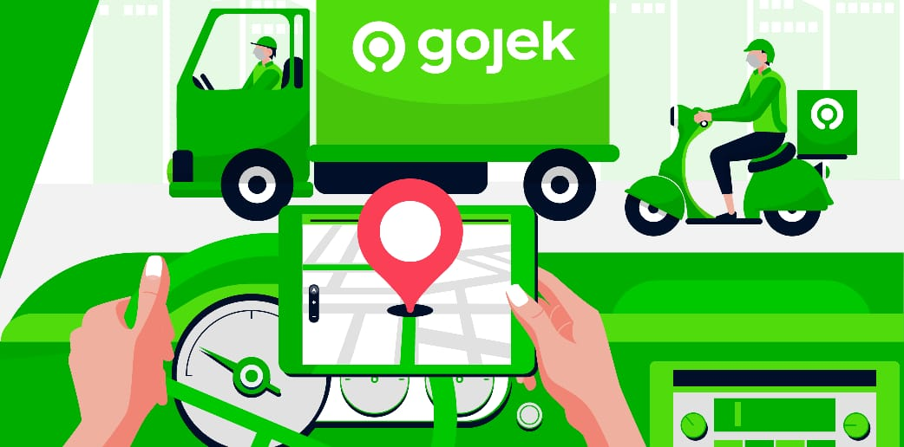

Dekomposisi 🧩
Pernah menghadapi masalah yang tampaknya terlalu rumit untuk dipecahkan? Jangan panik! Dekomposisi ada di sini untuk membantu! 🎯 Dengan memecah masalah yang besar menjadi bagian-bagian yang lebih kecil dan lebih mudah dikelola, Anda dapat mengatasi tantangan selangkah demi selangkah.
Apa yang dimaksud dengan Dekomposisi?
Dekomposisi adalah proses memecah masalah menjadi sub-masalah yang lebih kecil. Alih-alih menyelesaikan semuanya sekaligus, kami fokus untuk menyelesaikan satu bagian pada satu waktu. Pendekatan ini banyak digunakan dalam pemrograman, sains, dan bahkan kehidupan sehari-hari!

Contoh Penerapan di Kehidupan Nyata
Perjalanan keluarga ke Bali
dibagi menjadi mencari penerbangan, memesan hotel, membuat rencana perjalanan, dan mengemas barang-barang penting.
Memasak Rendang
Langkah-langkahnya meliputi menyiapkan bahan, membuat bumbu, memasak perlahan, dan membumbui.
Organisasi Acara Sekolah
Membagi tanggung jawab di antara tim dekorasi, penganggaran, logistik, dan pemasaran.
Membagi tanggung jawab di antara tim dekorasi, penganggaran, logistik, dan pemasaran.
Meningkatkan Fokus
Berkonsentrasi pada satu bagian pada satu waktu tanpa merasa tertekan.
Meningkatkan Kolaborasi
Memungkinkan tim bekerja secara bersamaan pada bagian yang berbeda.
Debugging yang Lebih Mudah
Memperbaiki masalah di bagian-bagian kecil tanpa mengulang semuanya.
Solusi Lebih Cepat
Memecahkan masalah yang kompleks dalam bagian-bagian yang dapat dikelola.
Perbandingan menggunakan Dekomposisi dan tidak
| Aspek | tanpa dekomposisi | Dekomposisi |
|---|---|---|
| Kompleksitas | Kerepotan | Terstruktur dan dapat diatur |
| Efisiensi | Memakan Waktu | Eksekusi lebih cepat |
| Eksekusi lebih cepat | Tinggi | Rendah |
| Contoh | Menulis langsung dalam satu kertas | proses dengan langkah - langkah |
Fakta Menarik!
Gojek menggunakan dekomposisi dalam pengembangan aplikasi! 🚀 Mereka membangun layanan terpisah untuk pemesanan kendaraan, pengantaran makanan, dan pembayaran sebelum menggabungkannya ke dalam satu ekosistem.
